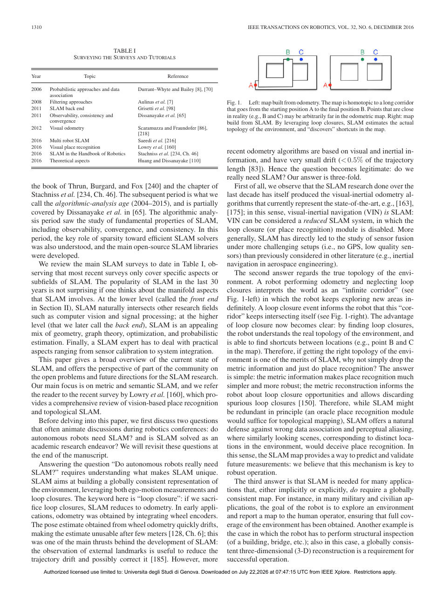

| 标题 | Past, Present, and Future of Simultaneous Localization and Mapping: Toward the Robust-Perception Age |
| 作者 | Cesar Cadena, Luca Carlone, Henry Carrillo, Yasir Latif, Davide Scaramuzza, Jose Neira, Ian Reid, John J. Leonard |
| 发表 | IEEE Transactions on Robotics (T-RO), Vol. 32, No. 6, pp. 1309–1332, December 2016 |
| DOI | 10.1109/TRO.2016.2624754 |
| 页数 | 24 pages (PDF) |
| 收稿/接收 | Received July 29, 2016; revised October 31, 2016; accepted October 31, 2016 |
| 资助 | MINECO-FEDER DPI2015-68905-P, ARC DP130104413, CE140100016, NSW TCF, ARO W911NF-05-1-0171, ONR N00014-11-1-0688, NSF IIS-1318392 |
| 关键词 | Factor graphs, localization, mapping, maximum a posteriori estimation, perception, robots, sensing, SLAM |
本文是一篇集综述、教程与立场声明于一体的里程碑式SLAM文献。作者以因子图（factor graph）上的最大后验估计（MAP）作为SLAM的事实标准数学表述，系统梳理了过去30年从经典滤波时代到现代图优化时代再到未来鲁棒感知时代的演进脉络。文章的核心贡献在于：(1) 将SLAM问题统一到因子图推断框架下，揭示前端（数据关联与感知）与后端（非线性优化）之间的深层耦合；(2) 按鲁棒性、可扩展性、地图表示、理论保证、主动SLAM五大维度批判性审视现有工作；(3) 对社区争论的两大终极问题——"机器人是否需要SLAM"和"SLAM是否已被解决"——给出掷地有声的回答：SLAM已从一般应用角度基本解决，但在长期鲁棒性、高级环境理解和资源自适应等关键维度上远未完结。这篇论文标志性地宣告SLAM正式从算法时代迈入鲁棒感知时代。
| 灵感来源 | 核心洞察 | 具体体现 |
|---|---|---|
| SLAM三十年发展史 | SLAM经历了经典时代（1986-2004）、算法分析时代（2004-2015），正进入鲁棒感知时代 | 论文按三个时代组织叙事，揭示每一阶段的核心问题转变：从"能否做"到"为什么能/不能"到"如何在各种条件下都能做" |
| 因子图与概率推断的统一框架 | EKF、粒子滤波、最大似然估计等看似迥异的方法，在因子图MAP估计下具有统一结构 | 论文明确提出"SLAM作为因子图推断"这一标准表述，使得不同方法可在统一数学语言下进行比较和组合 |
| 工业界实际部署的失败案例 | 实验室基准环境下的优良性能不等于真实长期运行中的鲁棒性，需要新的评价标准 | 区分"SLAM in a controlled environment"和"SLAM in the wild"，强调长期自主要求持久一致的环境表示和鲁棒的数据关联 |
| 计算机视觉中语义理解的进展 | 单纯的几何地图不足以提供高层任务所需的场景理解，需要度量-语义联合表示 | 提出将SLAM地图从几何点云/占据栅格扩展到包含对象、语义标签和拓扑关系的混合表示 |
【解决的问题】SLAM文献中存在EKF-SLAM、FastSLAM、GraphSLAM等多种截然不同的数学表述，初学者和研究者难以理解这些方法之间的本质联系和各自适用边界。
【灵感来源】概率图模型（Probabilistic Graphical Models）中的因子图框架，特别是Dellaert和Kaess等人关于平方根信息平滑（Square Root SAM）和iSAM2的工作。
【解决的问题】SLAM社区长期存在一种认知混乱：一方面某些基准数据集上系统已能达到毫米级精度，另一方面无人车和无人机在真实环境中仍然频繁失败。学术界缺乏对"解决"的精确定义。
【灵感来源】对比自动驾驶领域中"Level 0-5"的分级标准，以及机器人学中关于自主性（autonomy）的层次划分。
【解决的问题】已有的SLAM综述多为"罗列式"（encyclopedic），缺乏统一的批判性视角，未能指出各方向的内在联系和共同瓶颈。
【灵感来源】科学哲学中"研究纲领"（research programme）的概念，以及机器人学中系统集成（system integration）的思维方式。
论文的核心贡献不在于提出一个新的SLAM系统，而在于为SLAM系统提供统一的架构理解。下图展示了作者所论证的现代SLAM系统应具备的四个逻辑层次。
flowchart TB
SENSORS["传感器
Camera / LiDAR / IMU / RGB-D"]
FRONTEND["前端：感知与数据关联
Feature Extraction → Matching
Place Recognition → Loop Detection"]
BACKEND["后端：最大后验估计
Factor Graph Construction
Nonlinear Least Squares (LM/GN)
Incremental Smoothing (iSAM2)"]
MAP["地图表示
Metric Map | Semantic Map | Topological Map"]
TASK["任务
Navigation | Exploration | Manipulation"]
SENSORS --> FRONTEND
FRONTEND -->|"约束（因子）"| BACKEND
BACKEND -->|"优化后的位姿和地图"| MAP
MAP --> TASK
FRONTEND -->|"回环闭合约束"| BACKEND
CHALL["五大挑战维度"]
CHALL1["Robustness
鲁棒数据关联"]
CHALL2["Scalability
长期因子图增长"]
CHALL3["Representation
度量-语义表示"]
CHALL4["Theory
可观性/一致性保证"]
CHALL5["Active SLAM
控制-感知闭环"]
CHALL --- CHALL1
CHALL --- CHALL2
CHALL --- CHALL3
CHALL --- CHALL4
CHALL --- CHALL5
style SENSORS fill:#fff7ed,stroke:#fed7aa
style FRONTEND fill:#eff6ff,stroke:#bfdbfe
style BACKEND fill:#f5f3ff,stroke:#ddd6fe
style MAP fill:#ecfdf5,stroke:#bbf7d0
flowchart LR
subgraph 概率模型
A["联合后验
p(X, M | Z, U)"] --> B["因子分解
∝ p(x₀)Π p(xᵢ|xᵢ₋₁,uᵢ) Π p(zₖ|xᵢ, mⱼ)"]
end
subgraph 优化问题
B --> C["负对数变换
-log p → 非线性最小二乘"]
C --> D["残差加权求和
argmin Σ ‖eₖ‖²_Ωₖ"]
end
subgraph 数值求解
D --> E["线性化（Taylor展开）
JᵀΩJ Δx = -JᵀΩ e"]
E --> F{"稀疏结构?"}
F -->|"是(EKF/IF)"| G["信息矩阵求逆"]
F -->|"是(因子图)"| H["Cholesky/BTP
增量更新iSAM2"]
end
subgraph 输出
G --> I["轨迹 + 地图估计"]
H --> I
end
style A fill:#f0ebfd,stroke:#8b5cf6
style D fill:#e8f0fe,stroke:#3b82f6
style H fill:#e6f7ee,stroke:#10b981
SLAM在数学上被表述为机器人状态（轨迹）和环境模型的联合概率推断问题。给定：
| 类别 | 内容 | 说明 |
|---|---|---|
| 输入：传感器数据 | $$\{\mathbf{z}_{1:t}, \mathbf{u}_{1:t}\}$$ | 图像序列、激光扫描、IMU读数、里程计等原始传感器流 |
| 输入：传感器模型 | $$h(\mathbf{x}_i, \mathbf{m}_j)$$ | 给定位姿和地图参数后预测传感器读数的函数，如相机投影模型 |
| 输入：运动模型 | $$f(\mathbf{x}_{i-1}, \mathbf{u}_i)$$ | 给定上一状态和控制输入后预测当前状态的函数 |
| 输出：轨迹估计 | $$\hat{\mathbf{x}}_{1:T}$$ | 机器人在每个时间步的6-DoF（或3-DoF）位姿 |
| 输出：地图估计 | $$\hat{\mathcal{M}}$$ | 环境模型：点云、占据栅格、TSDF、语义地图或混合表示 |
| 输出：不确定性 | $$\Sigma_{\mathcal{X}}, \Sigma_{\mathcal{M}}$$ | 位姿和地图参数的协方差矩阵（由Hessian的逆提供） |
| 评价指标 | ATE, RPE, AUC | 绝对轨迹误差、相对位姿误差、回环召回率-精确率曲线下面积 |
| 方法 | 核心思路 | 局限性 | 代表性工作 |
|---|---|---|---|
| EKF-SLAM | 用扩展卡尔曼滤波维护状态均值与协方差，增量式融合新观测 | O(n²)计算复杂度（n为路标数）；线性化误差累积；假定的高斯分布不适用于数据关联歧义 | Davison 2003 (MonoSLAM), Smith et al. 1990 |
| 粒子滤波SLAM | 用Rao-Blackwellized粒子滤波分离轨迹和地图估计，每个粒子携带自己的地图 | 粒子数随状态维数指数增长；在高维位姿空间中退化；难以集成平滑/回环闭合 | Montemerlo 2002 (FastSLAM), Grisetti 2007 (GMapping) |
| 基于图的SLAM | 将所有历史位姿和约束建模为图，用非线性最小二乘法（LM/GN）全局优化 | 前端数据关联错误会导致毁灭性失败；离群值会严重污染优化结果 | Kummerle 2011 (g2o), Kaess 2012 (iSAM2), Dellaert 2006 (SAM) |
| 直接法SLAM | 直接在像素强度上最小化光度误差进行位姿和深度估计 | 对光度变化（曝光、光照）极端敏感；需要良好的初始猜测；纯旋转退化 | Engel 2014 (LSD-SLAM), Engel 2018 (DSO) |
| 基于学习的SLAM | 用CNN/RNN学习端到端的位姿估计、深度预测或语义建图 | 泛化性差（依赖训练数据域）；缺乏概率解释和不确定性量化；可解释性差 | Kendall 2015 (PoseNet), Zhou 2017 (SfMLearner) |
数据关联——确定"传感器当前看到的物体是否与地图中已有的路标相同"——是SLAM中唯一涉及离散决策的问题。错误的数据关联（误匹配、闭环假阳性）会将错误的约束注入后端因子图，导致整个地图发生灾难性变形。传统方法依赖描述子距离和几何一致性检验，但这些方法在以下条件下失败：(a) 场景外观的剧烈变化（昼夜、季节、天气）；(b) 感知混淆（perceptual aliasing）——不同位置看起来极其相似；(c) 大量动态对象产生的干扰特征。论文强调，鲁棒的数据关联必须从"特征匹配的局部决策"升级为"结合多模态信息和长期经验的全系统一致性推理"。
随着运行时间增长，SLAM系统面临三重尺度压力：(a) 因子图规模膨胀——每新增一个关键帧就增加新的变量和因子，Hessian矩阵的维数线性增长。尽管增量求解器（如iSAM2, GTSAM）利用贝叶斯树的稀疏更新显著降低了计算瓶颈，但内存消耗的无界增长仍是问题。(b) 地图规模膨胀——三维稠密地图的数据量与探索面积成正比，存储和传输成本高昂。(c) 回环检测退化——随着地图中地点数量增加，回环检测需要对越来越大的数据库进行最近邻检索，检索时间和误匹配率都随之上升。论文指出，解决长期可扩展性需要地图稀疏化（marginalization/sparsification）、分层表示（多分辨率地图）和主动遗忘（智能地丢弃不再有用的历史信息）。
地图的表示方式直接决定了SLAM系统的精度、效率、鲁棒性和下游任务的实用性，但不存在一种对所有任务和环境都最优的表示。纯几何表示（如稀疏点云）适合视觉定位但缺乏语义信息；稠密表示（如TSDF）适合避障和操作但计算成本极高；拓扑表示（如位姿图）适合全局规划但缺乏局部精度。论文提出，下一代SLAM系统需要混合表示——在度量层维护高精度几何信息，在语义层标注对象类别和属性，在拓扑层编码地点连通性——并根据任务需求和数据可用性在这些层次之间动态切换。最大的开放性挑战在于如何在数学上将这些异构表示统一到一个一致的优化框架中。
由于本文是综述兼立场文章，它的"方法"是组织大量已有研究并提取洞察的方法论：
| 参数/符号 | 含义 | 典型取值/范围 |
|---|---|---|
| $$\mathcal{X} = \{\mathbf{x}_0, \mathbf{x}_1, \ldots, \mathbf{x}_T\}$$ | 机器人轨迹（各时刻位姿） | T 可达 10⁴–10⁵ 量级（大型SLAM数据集） |
| $$\mathcal{M} = \{\mathbf{m}_1, \ldots, \mathbf{m}_M\}$$ | 地图参数（路标/点云/面片） | M 可达 10⁵–10⁷（稠密建图） |
| $$\mathbf{e}_k$$ | 第k个因子的残差向量 | 维度取决于传感器类型（视觉2D, 激光3D） |
| $$\Omega_k$$ | 第k个测量的信息矩阵（协方差逆） | 视觉重投影通常设为对角阵 σ²I |
| $$\rho(\cdot)$$ | 鲁棒核函数 | Huber (k=1.345), Cauchy (c=2.385), Tukey (c=4.685) |
| $$\mathbf{J}$$ | 测量雅可比矩阵 | 极其稀疏，每行仅少数非零元素 |
| $$\lambda_{LM}$$ | Levenberg-Marquardt阻尼因子 | 自适应调节，使法方程从GN平滑过渡到梯度下降 |
| $$\alpha$$ | 回环检测阈值（描述子距离） | 依描述子类型而定（如DBoW分数 > 0.3） |
这个问题触及SLAM数学理论的核心。考虑一个因子图，其包含 $$T$$ 个位姿变量和 $$M$$ 个路标变量，每个测量仅连接一个位姿和一个路标。对应的Hessian矩阵（即法方程系数矩阵 $$\mathbf{J}^{\top}\Omega \mathbf{J}$$）具有块对角结构：左上角是位姿间的块三对角矩阵，右下角是路标间的块对角矩阵，两者通过非对角耦合块相连。这一结构决定了：(a) Schur补（边缘化路标后的简化位姿系统）仍然稀疏；(b) Cholesky分解的填充（fill-in）仅发生在连续位姿之间，而非所有位姿之间；(c) 消除变量的顺序（variable elimination ordering）可以通过COLAMD等启发式算法优化，使填充最小化。正是这种由因子图拓扑决定的代数稀疏性，使得求解一个涉及上万个变量、数十万观测的SLAM问题在实际计算上可行——它本质上将一个NP-hard的通用优化问题转化为了在稀疏图上可高效求解的特殊问题。这是SLAM从EKF时代的O(n²)演进到GraphSLAM时代的近线性复杂度的数学基础。
一个容易忽视但至关重要的原则是：SLAM系统的前端和后端具有本质不对称的耦合关系。后端的优化是连续且平滑的——给定正确的因子，非线性最小二乘可以收敛到高精度的局部最优解。但前端的数据关联是离散且脆弱的——一个错误的匹配（假阳性回环或特征误匹配）会给因子图引入一个完全错误的约束，其残差可能在局部看似合理（因为错误的回环恰好与某些其他约束在数值上不矛盾）但在全局结构上具有毁灭性影响。这意味着：
这种不对称性解释了为什么过去15年对后端算法的改进（更快的求解器、更好的初始化、增量更新等）的边际收益在递减，而前端鲁棒性的提升（更好的特征、更强的离群剔除、语义引导的数据关联）正在成为SLAM突破的瓶颈。论文的核心信息"走向鲁棒感知时代"正是基于这一机理认知。
关注焦点：可观性、一致性、收敛性——所有问题都可以在已知数据关联的假设下用数学语言精确刻画。
典型工作：EKF-SLAM的可观性分析证明标准EKF会因线性化误差导致不一致（Huang & Dissanayake 2007）；FEJ-EKF通过在一阶固定点处评估雅可比来保证可观性（Huang 2008）；iSAM2通过贝叶斯树实现增量式精确求解（Kaess 2012）。
隐含假设：数据关联是完美的——观测和路标的对应关系已知且正确。
贡献：为SLAM奠定了严格的数学基础，解释了"为什么某些SLAM算法有效而另一些不稳定"。
局限：对前端错误的脆弱性未给予足够重视，导致理论与实际部署之间存在巨大鸿沟。
关注焦点：鲁棒性、适应性、持久性——系统必须在各种真实世界条件下持续工作，即使数据关联可能不完美。
典型方向：语义SLAM将对象级语义信息引入数据关联（Bowman 2017）；长期SLAM通过经验积累区分静态结构和动态对象（Fehr 2017）；基于学习的SLAM用CNN/GNN学习从像素到位姿/深度的映射。
隐含假设：来自计算机视觉和机器学习的表示学习工具可以弥补纯几何方法的脆弱性。
贡献：将SLAM的能力边界从受限实验室环境推向开放的真实世界。
局限：学习方法的泛化性、可解释性和概率一致性问题仍未解决，且计算资源需求大幅增加。
SLAM中地图的本质是一个"世界状态的压缩摘要"。但压缩什么、保留什么，完全取决于地图将被用于什么任务：(a) 对于导航避障，需要稠密的占据栅格；(b) 对于精确定位，需要稀疏但高精度的几何路标；(c) 对于路径规划，需要拓扑图表示区域连通性；(d) 对于目标搜索，需要语义标签说明每个区域"是什么"。这四种需求无法被任何单一表示同时满足——稠密地图提供障碍物信息但存储成本高，稀疏地图高效但缺乏自由空间信息，拓扑地图适合大尺度规划但缺乏局部精度，语义地图提供高层含义但缺乏精确几何。论文揭示的深刻机理是：理想的SLAM系统必须维护多层次的表示，并在不同层次间建立双向的一致性约束——语义标签必须与几何结构一致，拓扑关系必须由度量邻接关系推导。这本质上是一个跨表示域的联合推理问题，当前的数学工具（因子图仅处理同构的连续变量）尚不足以优雅地处理包含离散语义标签和连续几何参数在内的混合图模型。

Figure 1 的定位：这是论文的开篇架构图，起到了"路线图"的作用。它直观展示了SLAM系统的四个逻辑层次（传感器→前端→后端→地图），以及五个前沿研究方向（鲁棒性、可扩展性、地图表示、理论保证、主动SLAM）与系统各层次之间的对应关系。
关键视觉元素解读：
为什么这张图是代表图：它浓缩了整篇论文的核心论点——SLAM要从一个纯粹的几何估计问题（经典时代的关注重心）转变为一个包含鲁棒感知、语义理解和资源管理的系统工程问题（鲁棒感知时代的要求）。
| 环境条件 | SLAM鲁棒性 | 说明 |
|---|---|---|
| 室内静态环境、充足纹理、均匀光照 | ★★★★★ | SLAM基本解决，多种方法均能取得厘米级精度 |
| 室内低纹理环境（白墙、走廊） | ★★★☆☆ | 特征不足导致退化，需依赖结构线/面或惯导辅助 |
| 室外城市场景、中等光照变化 | ★★★★☆ | 现代V-SLAM系统（ORB-SLAM3, VINS-Mono）表现良好 |
| 室外极端光照（正午直射 vs 夜间） | ★★☆☆☆ | 光度一致性假设严重破坏，特征检测/匹配困难 |
| 跨季节/跨天气（晴 vs 雪/雨） | ★☆☆☆☆ | 外观剧烈变化，传统回环检测几乎完全失败 |
| 高度动态环境（拥挤街道、商场） | ★★☆☆☆ | 动态对象产生大量离群特征，需显式动态过滤 |
| 大尺度长距离（数公里至数十公里） | ★★★☆☆ | 漂移累积严重，需全局回环和子地图管理 |
| 高速运动（无人机 >10m/s 机动） | ★★★☆☆ | 运动模糊和帧间视差过大，需高帧率或事件相机 |
Step 1 — 现象观察：SLAM论文的总数在过去十年中呈指数增长，但对应的是工业界（自动驾驶、无人机、服务机器人）的SLAM部署失败率居高不下。同时，学术界内部出现了两个分裂的叙事——一部分人宣称"SLAM已基本解决"（指前端跟踪+局部建图），另一部分人则认为"SLAM远未解决"（指长期鲁棒自主任务）。这两种声音都在各自的语境下成立，但它们指向的是SLAM问题谱系的不同位置。论文敏锐地捕捉到这一分裂，并将其作为出发点。
Step 2 — 历史诊断：通过回顾SLAM 30年的发展，作者识别出三个不同的"时代"：(a) 经典时代（1986-2004）——建立了概率SLAM的基本范式（EKF、RBPF、MLE），核心问题是"SLAM是否可以做"；(b) 算法分析时代（2004-2015）——系统研究了可观性、一致性和收敛性，核心问题是"SLAM为什么有效/失效"；(c) 鲁棒感知时代（2016-）——将感知鲁棒性置于中心位置，核心问题是"SLAM如何在任何条件下都有效"。这个历史分期不是为了做文献综述，而是为了证明SLAM的核心问题已经发生了结构性转变。
Step 3 — 数学统一：将所有主流SLAM方法统一到因子图MAP估计框架下。这一步的动机不是为了制造"大一统理论"的智力满足感，而是为了让读者看到：无论具体的实现路径如何（EKF, Graph-based, Direct, Learning-based），所有方法都面临相同的结构性瓶颈——前端数据关联的质量决定了后端优化的上限。这个认识是从"SLAM已解决"到"SLAM远未解决"的关键概念桥梁。
Step 4 — 瓶颈定位：通过对鲁棒性、可扩展性、地图表示、理论保证和主动SLAM五大前沿的系统梳理，论文最终锁定了共同的瓶颈——鲁棒的感知前端。无论是长期运行中的漂移、跨季节的回环失败、动态环境的干扰还是语义理解的需求，最终都归结为同一个问题：如何在不可靠的传感器数据中可靠地提取正确的数据关联。这个结论不是凭空的——它来自对每个子领域的批判性审视，揭示出看似独立的问题在底层共享同一个根本挑战。
Step 5 — 路径指引：论文为鲁棒感知时代规划了技术路线：从"局部特征匹配"到"全局语义一致性推理"的数据关联升级；从"纯几何优化"到"几何+语义+拓扑"的混合表示；从"被动观测"到"主动信息获取"的控制-感知闭环；从"经验调参"到"理论保证"的分析工具。这些路径在2016年看来是前瞻性的蓝图，而在后续5-8年的发展中，其中大部分已被验证为核心发展方向——这证明了论文洞察的预见性价值。
这篇论文提供了一种撰写高水平综述/立场文章的方法论范例：(a) 不是简单地枚举已有工作，而是以一个问题为主线（"SLAM是否已解决"）组织所有材料；(b) 为每个引用的工作提供批判性评价而非简单总结——指出其优势、局限和适用范围；(c) 在综述的基础上表达自己的立场和判断——这是将综述提升为立场文章（position paper）的关键；(d) 揭示看似独立的研究方向之间的深层联系——如证明鲁棒数据关联是所有前沿方向的核心瓶颈。这种写作方法论对于任何想要在拥挤的研究领域中发表有影响力综述论文的人都有重要参考价值。
| 文献 | 核心内容 | 与本文关系 |
|---|---|---|
| Dellaert & Kaess (2006/2012) — Square Root SAM / iSAM2 | 将SLAM表述为因子图上的非线性最小二乘，利用稀疏QR分解和贝叶斯树实现高效增量求解 | 本文的核心数学基础——将SLAM统一到因子图MAP框架的理论源头 |
| Durrant-Whyte & Bailey (2006) — SLAM Tutorial Parts I & II | 经典时代的标志性综述，系统介绍了EKF-SLAM、FastSLAM和MLE方法的数学表述 | 本文的历史起点——论文在多次引用这两篇教程的基础上进行扩展和超越 |
| Scaramuzza & Fraundorfer (2011) — Visual Odometry Tutorial | 视觉里程计的完整教程，覆盖特征法、直接法和混合方法 | Scaramuzza作为合作作者的VO专业知识为本文的前端讨论提供了深厚的实践基础 |
| Engel et al. (2014/2018) — LSD-SLAM / DSO | 直接法SLAM的代表性系统，在像素强度上直接进行位姿和深度联合优化 | 本文讨论的直接法SLAM路线的代表性工作，展示了不用特征的前端替代方案 |
| Mur-Artal et al. (2015/2017/2020) — ORB-SLAM 1/2/3 | 特征法SLAM的集大成者，支持单目/双目/RGB-D，在多数据集上取得SOTA | 本文发表的同期的SOTA特征法系统，验证了"鲁棒前端+全局优化"路线的有效性 |
| Huang & Dissanayake (2007/2016) — Observability & Consistency | 系统分析了EKF-SLAM中线性化误差导致的不一致性问题，提出了FEJ-EKF等解决方案 | 本文中"算法分析时代"的理论支柱——SLAM可观性/一致性的奠基性工作 |